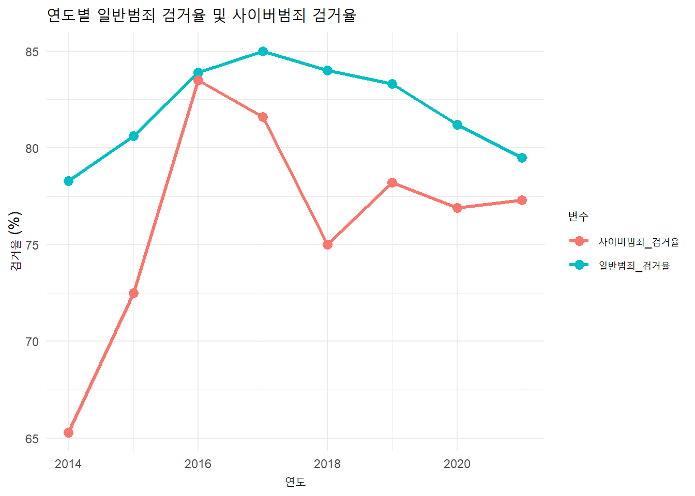

── Attaching core tidyverse packages ──────────────────────── tidyverse 2.0.0 ──
✔ dplyr 1.1.4 ✔ readr 2.1.4
✔ forcats 1.0.0 ✔ stringr 1.5.1
✔ ggplot2 3.4.4 ✔ tibble 3.2.1
✔ lubridate 1.9.3 ✔ tidyr 1.3.0
✔ purrr 1.0.2
── Conflicts ────────────────────────────────────────── tidyverse_conflicts() ──
✖ dplyr::filter() masks stats::filter()
✖ dplyr::lag() masks stats::lag()
ℹ Use the conflicted package (<http://conflicted.r-lib.org/>) to force all conflicts to become errors
library(dplyr)
#엑셀파일 불러올 수 있는 패키지 설치library(readxl)
#시각화 테마 패키지 설치 후 불러오기 library(ggthemes)
#경찰청 홈페이지의 사이버범죄 발생및 검거건수 현황 데이터(엑셀에 복사 붙여넣기 한 것) 불러오기#파일 경로가 제 컴퓨터에 지정된 경로로 설정되어 있어서 안 열릴 것 같습니다. html 파일로 봐주세요data0<-read_excel("0609_cyber.xlsx")
#발생건수 대비 검거건수 요약한 테이블 만들기(오류 고치다가 칼럼 이름을 영어로 바꿔버렸어요..)#코드순서 : 불러온 파일에서 balsaeng(발생건수) 대비 gumgu(검거건수)에다 100을 곱한 수를 mutate으로 추가한 후, select 함수를 사용해서 연도와 검거율 열만 빼낸 데이터프레임을 datasumm으로 지정.datasumm<-data0|>mutate(사이버범죄_검거율=(gumgu/balsaeng)*100)|>select(gubun, 사이버범죄_검거율)print(datasumm)
# 사이버범죄 검거율과 일반 범죄 검거율의 시간에 따른 변화량을 시각화하기 위해서 ggplot, geom_line 함수를 사용joingraph<-ggplot(data_long, aes(x = 연도, y = 값, color = 변수)) +geom_line(size =1.2) +# 선의 두께를 조절geom_point(size =3) +# 데이터 포인트 표시labs(title ="연도별 일반범죄 검거율 및 사이버범죄 검거율",x ="연도",y ="검거율 (%)",color ="변수" ) +theme_minimal() # 미니멀 테마 적용
Warning: Using `size` aesthetic for lines was deprecated in ggplot2 3.4.0.
ℹ Please use `linewidth` instead.
print(joingraph)

# 일반 범죄에 비한 사이버범죄 검거율은 2016년에 비등한 수준으로 올라갔으나 다시 격차가 벌어짐. 최근에 이르러 격차가 줄어들고 있지만 여전히 사이버범죄 검거율은 일반 범죄에 비해 낮은 편임.# 검거건수가 아닌 검거율을 비교하는 이유 : 검거건수가 많더라도 검거율이 높다면 경찰이 해당 범죄를 충분히 심각하게 여기고 검거할 수 있는 능력이 있다고 할 수 있음. 검거율을 비교한다면 경찰과 사회가 해당 범죄를 검거하기 위해 실질적으로 얼마나 노력하고 있는지를 비교할 수 있음.
# 경찰청 홈페이지에 따르면 사이버범죄의 종류는 크게 세 가지로 나뉘고 그 안에서 세부적인 분류가 된다. 사이버범죄의 3가지 분류에서 각 분류별 범죄유형의 발생건수를 시간의 흐름에 따라 비교하고, 각각의 표에서 가장 검거건수가 높은 범죄유형을 경찰청 통계에 따라 다시 소분류로 분류해 검거율을 비교하고자 한다. 최종적으로 검거율이 제일 낮은 3가지 범죄유형에 대한 심각성을 제고하고 수사를 확충해야 한다는 결론을 낼 수 있다.# 검거율이 아닌 발생건수를 비교하는 이유 : ddos 같은 범죄유형의 경우 발생건수가 얼마 되지 않아 검거율을 비교하는 게 의미가 없다고 판단하였다. 통계적/논리적으로 유의미한 결론을 내기 위하여 발생건수가 충분히 많은 범죄유형 한정으로 소분류의 검거율을 비교하기로 한다.# 경찰청 홈페이지 데이터를 엑셀로 옮기고, 그 데이터를 다시 data66이라는 이름으로 가져온다. 그 다음 피벗 함수를 이용해 시각화가 가능한 길쭉한 형태로 바꿔준다. data66<-read_excel("정보통신망침해범죄_발생건수.xlsx")|>pivot_longer(cols =-연도, # '연도' 열을 제외한 나머지 열을 변환합니다.names_to ="범죄유형", # 열 이름을 '범죄유형'으로 설정합니다.values_to ="건수"# 값들을 '건수'로 설정합니다. ) print(data66)
#정보통신망침해범죄 유형 중 발생건수가 가장 많은 유형은 '해킹' 유형인 것으로 나타났다.
data77<-read_excel("정보통신망이용범죄.xlsx")|>pivot_longer(cols =-연도, # '연도' 열을 제외한 나머지 열을 변환합니다.names_to ="범죄유형", # 열 이름을 '범죄유형'으로 설정합니다.values_to ="건수"# 값들을 '건수'로 설정합니다. ) print(data77)
data88<-read_excel("불법콘텐츠범죄.xlsx")|>pivot_longer(cols =-연도, # '연도' 열을 제외한 나머지 열을 변환합니다.names_to ="범죄유형", # 열 이름을 '범죄유형'으로 설정합니다.values_to ="건수"# 값들을 '건수'로 설정합니다. ) print(data88)
#불법콘텐츠범죄 중 발생건수가 가장 많은 것으로 나타난 유형은 '사이버명예훼손모욕' 이다.
#공공데이터포털의 경찰청 사이버범죄 자료에서 해킹 유형만 엑셀로 가져와 엑셀파일을 연 다음, 피벗 함수를 이용해 검거율 계산이 가능한 형태로 바꿔주고 arrange 함수를 사용해 연도별로 정리해준다. 데이터프레임의 이름은 name1로 지정한다. name1<-read_excel("해킹.xlsx")|>pivot_wider(names_from="구분", values_from =c("계정도용", "단순침입", "자료유출", "자료훼손"))|>arrange(연도)#지정한 name1 데이터에서 분류별 검거율 열을 추가해준다. 그 다음 select 함수를 이용해 필요한 열만 골라내고, 다시 시각화가 가능한 형태로 바꿔주기 위해 피벗 longer 함수를 사용해 길쭉한 형태로 만들어준다. name1<-name1|>mutate(계정도용검거율=(계정도용_검거건수/계정도용_발생건수)*100, 단순침입검거율=(단순침입_검거건수/단순침입_발생건수)*100, 자료유출검거율=(자료유출_검거건수/자료유출_발생건수)*100, 자료훼손검거율=(자료훼손_검거건수/자료훼손_발생건수)*100)|>select(연도, 계정도용검거율, 단순침입검거율, 자료유출검거율, 자료훼손검거율)|>pivot_longer(cols=!연도, names_to="범죄유형", values_to="검거율")#시각화 자료 이름은 graphname1로 지정한다. graphname1<-name1|>ggplot()+aes(x=연도, y=검거율)+geom_line(aes(color=범죄유형)) +geom_point(aes(color=범죄유형))+theme_classic()+ggtitle("해킹_유형별 검거율 변화")print(graphname1)
# 시각화 자료에 따르면 사이버사기 중 가장 검거율이 낮은 범죄 유형은 '이메일무역사기'이다. 이메일무역사기는 2017년 이전의 자료가 없고 검거자료가 최근에 만들어진만큼 발생건수와 검거율이 낮다. 이메일무억사기 범죄에 관한 자세한 조사와 수사 확충이 이루어질 필요가 있을 것이다.
# 이전 코드를 사이버명예훼손 자료로 바꾸어 반복한다.name3<-read_excel("사이버명예훼손.xlsx")|>mutate(사이버명예훼손검거율=(검거건수/발생건수)*100)|>select(연도, 사이버명예훼손검거율)